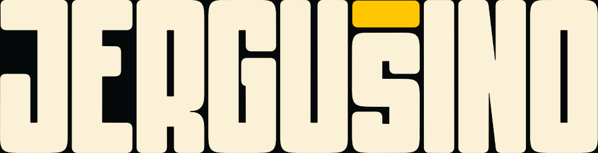

Nahraj font a tool doň dorobí chýbajúce slovenské písmená z jeho vlastných častí.
Mäkčeň vezme zo Š, dĺžeň z É a ď, ľ, ť dostanú apostrof z písma. Font sa spracuje priamo v tvojom prehliadači a nikam sa neodosiela.

tvoj
Nahraj font a tool doň dorobí chýbajúce slovenské písmená z jeho vlastných častí.
Mäkčeň vezme zo Š, dĺžeň z É a ď, ľ, ť dostanú apostrof z písma. Font sa spracuje priamo v tvojom prehliadači a nikam sa neodosiela.
Pred úpravou skontroluj licenciu fontu: niektoré licencie úpravy zakazujú. Nepodporované sú variabilné fonty a písmená so znamienkom pod písmenom (ą, ę, ł).